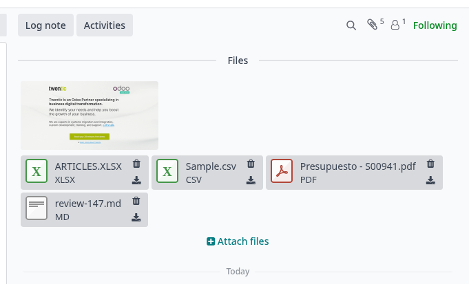
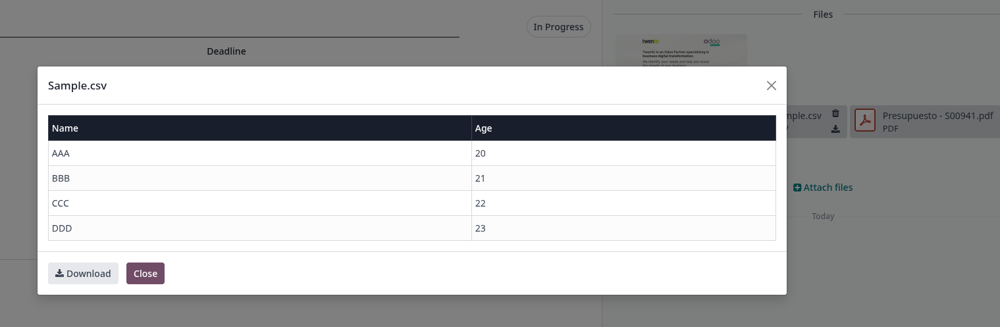

Key Features
Instant File Preview
Multiple File Formats
Download Always Available

Attachments of different formats — PNG, CSV, PDF, XLSX, MD and more — are displayed in the chatter with their corresponding icon. A single click on any of them opens an instant preview, eliminating the need to download the file just to check its contents.

The preview dialog renders the file content directly inside Odoo. In the case of CSV files, the data is shown as a formatted table with headers and rows, making it easy to inspect the information at a glance. A Download button is always available if a local copy is needed.

Instant File Preview
Multiple File Formats
Download Always Available